Zusammenfassung KT
Inhaltsverzeichnis
- OSI-Referenzmodell
- Übertragungsmedien
- Physical Layer
- Data Link Layer
- Lokale Netzwerke (LAN)
- Switched LAN und Ethernet-Technologien
OSI-Referenzmodell
Peer-to-peer Protokolle zwischen gleichgestellten Schichten.
Anbieten der Dienste für die nächsthöhere Schicht.
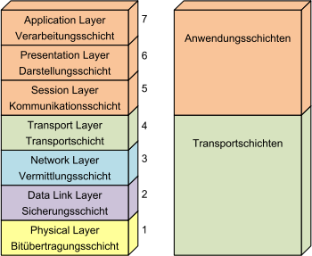
Physical Layer
Das Übertragungsmedium ist nicht teil des OSI-Modells. Der Physical Layer ist, wie jede andere Schicht, austauschbar. Kupferkabel kann mit Glasfaser ausgetauscht werdem, ohne Rückwirkung auf den Data Link Layer.
Data Link Layer
Für Punkt-Punkt-Verbindungen zwischen genau zwei Teilnehmern:
- Realisieren einer sicheren Verbindung. Z.B. Fehlererkennung/-korrektur
- Aus-/Verpacken der Datenblöcke für Network Layer
- Flow Control. (nicht schneller Senden als Empfangen)
Im LAN:
- Adressierung der Teilnehmer (Medium Access Control Address, MAC-Address)
- Steuerung des Zugriffs auf das Medium (falls nicht Full-Duplex)
Der Transport Layer macht ähnliches aber auf Netzwerkebene.
Network Layer
Der Network Layer ermöglicht den Datenaustausch auf einheitliche Weise. Dazu wird Adressierung und Routing verwendet.
Verbindungsorientierter Dienst
Alle Pakete werden über den gleichen Pfad geroutet. Dazu wird eine Verbindungsnummer gespeichert.
- Zeitverlust und Zusatzaufwand für den Aufbau der Verbindung.
- Geforderte Charakteristik (Durchsatz, Delay, Verlust) besser einhalten
- Reihenfolge der Daten bleibt erhalten
- Lastverteilung durch Wahl der Route
- Jeder Knoten braucht einen Eintrag pro Verbindung
Verbindungsloser Dienst (Datagram)
Wie Briefpost. Das Paket wird unabhängig von anderen Paketen versendet. (Pfad kann gleich sein, muss aber nicht). Jeder Knoten muss wissen an welchen Ausgang das Paket versendet werden soll, damit es das Ziel erreicht => Routing-Tabelle.
IP ist ein Beispiel eines verbindunslosen Dienstes.
- bei Unterbruch oder Überlastung einfach erneut senden
- Reihenfolge wird falls nötig durch Transport Layer wiederhergestellt
Transport Layer
Höchste Schicht des Transportsystems und biete Prozessen des Session Layers einen effizienten Datentransport.
Für Transit-Knoten (zwischen Anfangs- und Endknoten) wird die Schicht nicht benötigt.
- User Data Protocol (UDP): verbindungslos, unsicher
- Transmission Control Protocol (TCP): verbindungsorientierter, sicher
Session Layer
Auf- und Abbau von Sitzungen
Falls Transportverbindung zusammenbricht, muss z.B. neue Verbindung hergestellt werden.
"Verwaltung der Transportschicht"
Presentation Layer
Stellt Dienste zur Darstellung der zu übertragenen Daten zur Verfügung. Beispiel:
- Codierung von Zeichen von/zu ASCII, Unicode, ISO, etc.
- Fliesskommazahlendarstellung
Application Layer
Legt das Bindeglied zur Anwendung fest:
- FTP
- SMTP
- HTTP
- DNS
Kritik
Aus heutiger Sicht fehlen wichtige Themen wie:
- Daten-Sicherheit und - Verschlüsselung
- Hochverfügbarkeit und Redundanz
- Netzwerk-Management (Überwachung und Steuerung)
- Zeitsynchronisation
Diese Punkte lassen sich zwar im OSI-Modell irgendwie unterbringen, wurden aber ursprünglich nicht adressiert.
Übertragungsmedien
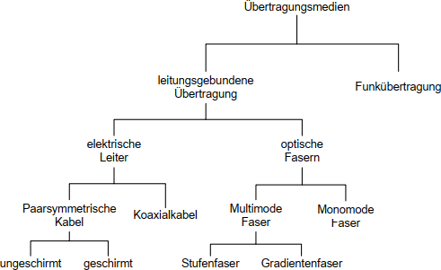
Wichtigste Eigenschafen:
- Erreichbare Distanz
- maximale Datenübertragungsrate
Ausbreitungsgeschwindigkeit
In Materien (egal ob Glas oder Metall):
Signaldämpfung und Dämpfungsbelag
Die Signaldämpfung ist die Leistungsabnahme eines Signals und beschränkt die erreichbare Distanz.
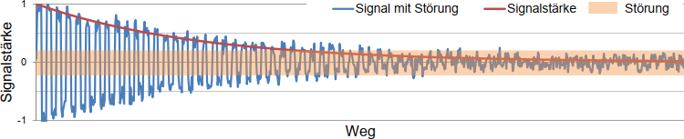
Signaldämpfung in Dezibel und Eingangsleistung , Ausgangsleistung
Signaldämpfung
Mittels Spannung:
Signaldämpfung
Dämpfungsbelag
Signaldämpfung pro Distanz oder
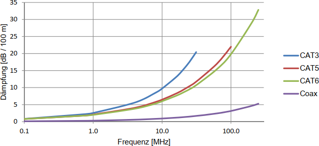
Koaxialkabel
Verwendung: Punkt-Punkt-Verbindungen Hochgeschwindigkeitsnetz (10, 40, 100 GBit/s)
- gut für Übertragung hochfrequenten Signalen
- kleiner Dämpfungsbelag => hohe Distanzen
- speziell Twinax-Kabel, Aderpaare einzeln geschirmt
Twisted Pair
- Verdrillte Aderpaare
- Un-/Shielded Twisted Pair, STP vs. UTP
Schirmung
x/yTP
x Gesamtschirmung
y Aderpaarschirmung
U = ungeschirmt
F = Folienschirm
S = Geflechtschirm
SF = Schirm aus Geflecht und Folie (nur Gesamtschirmung)
Störungen
Störungen von Datenleitungen werden als Übersprechen oder Nebensprechen (Crosstalk)
bezeichnet.
Differenzverstärker
gegen kapazitive Kopplung

Induktiv eingekoppelte Störungen können mit Differenzverstärker oder Schirmen nicht beseitigt werden, da die Störungen ein komplementäres Signal erzeugen.
Durch die Verdrillung kann dies aber minimiert werden.
Bilder nötig?
Kabelkategorien und Stecker
- Kategorie 1-4: Für Telefon und Modem nicht moderne LAN (0.4/4/16/20MHz Bandbreite)
- Kategorie 5: Weit verbreitet und akzeptiert. (100 Mhz, 1 Gbit/s, 100 m)
- Kategorie 6: 250 MHz für Gigabit Ethernet
- Kategorie 7: 600 MHz 10 GBit/s, (spezielle Stecker und S/FTP Kabel)
Praxistipps Gebäudeverkabelung
- Enden mit Abschlusskappen versehen
- Einhaltung der Lagerungs- und Verlegetemperaturen
- Einhalten von zulässigen Biegeradien und Zugkräften
- Kabel nicht verdrehen oder quetschen
- Einsatz geeigneter Werkzeuge
Pin-Layout des RJ45-Steckers und Bezeichnung der Aderpaare

Lichtwellenleiter
- Vollständige Unempfindlichkeit gegen elektromagnetische Störungen
- Kleine Signaldämpfung und somit grosse Distanzen
- Grosse Bandbreiten und somit grosse Übertragungsraten
Brechungsindex des Kerns muss leicht höher sein las der des Mantels.
Z.B. 1.50 und 1.48.
Brechung und Totalreflexion
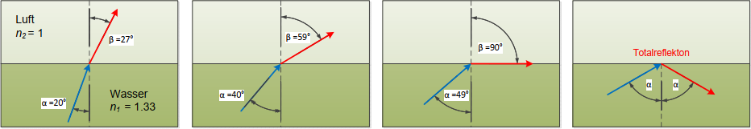
Totalreflexion wenn
Einteilung LWL
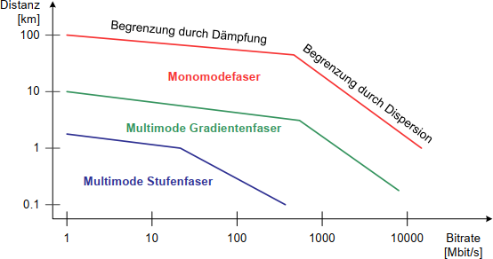
Dämpfung durch Absorption, Dispersion = Verzerrung des Signals
Multimode Glasfaser
Stufen- vs. Gradientenfaser
TODO
Monomode Glasfaser
Sehr kleinen Kern. Unterdrückt fasst alle Moden bis auf einen. (10 Gbit/s, 80km; 100 Gbit/s, 40km)
Strukturierte Gebäudeverkabelung
TODO
Physical Layer
- elektrische Eigenschaften (Pegel, Zeiten, etc.)
- Codierung (Return to Zero, non return to Zero, AMI, Manchester, FSK, etc.)
- mechanische Eigenschaften (Stecker, Pinbelegung, etc.)
Faktoren welche den Physical Layer beeinflussen:
- Übertragungsmedium
- Kopplung der Kommunikationspartner
- Übertragungsverfahren
Kopplung der Kommunikationspartner
- Simplex: nur eine Richtung (z.B. Radio, TV)
- Halbduplex: Beide Richtungen aber nicht gleichzeitig (z.B. Funkgerät)
- Vollduplex: Beide Richtungen 1 Kanal, beide gleichzeitig, z.B. Telefon
nicht scharf: Zeitmultiplex ist technisch Halbduplex, aber wirkt wie Vollduplex.
Verbindungsarten:
- Punkt-Punkt: direkte Verbindung A-B (PC und USB-Drucker)
- Shared Medium: Mehrere Knoten über gleiches Medium (Bus, LAN)
Übertragungsverfahren
- parallele Übertragung: Mehrere Leitungen, gleichzeitig (parallele) Signale übertragen
- seriell synchron und asynchron
Serielle asynchrone Übertragung
- kein Takt für Bitsynchronisation
- Empfänger justiert sein Takt andauernd, tastet nach Stopbit ab für nächstes Startbit
- Bitrate, Anzahl Datenbits und Anzahl Stopbits vorher vereinbaren
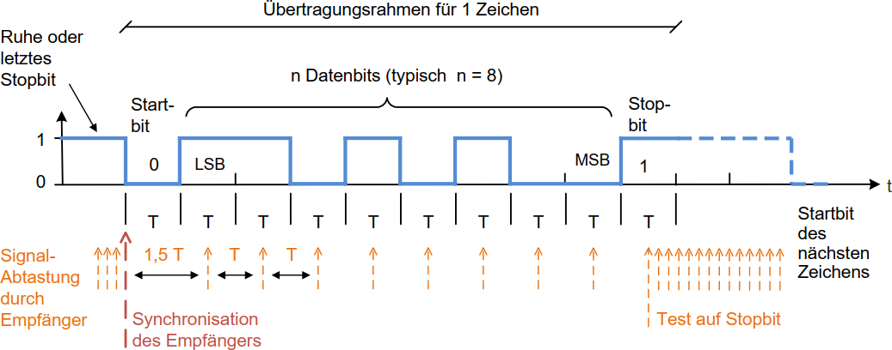
- sehr einfache Implementation
- Start/Stopbit verringern aber Nettobitrate
- nicht sehr robust (Bitfehler)
Serielle synchrone Übertragung
- Empfänger synchron mit Sender
- hohe Datenraten (keine Start- / Stopbits)
- Takt muss mitgegeben werden (separat oder Codierverfahren, um Takt zu extrahieren)
- Data Link Layer trennt die einzelnen Bytes
Leitungscodes
- physikalisch vorhandene Bandbreite effizient nutzen
- unabhängig von übertragenen Daten eine zuverlässige Taktrückgewinnung ermöglichen
- möglichst gleichspannungsfrei sein
Leitungseinrichtung codiert die Daten in den Leitungscode.
Der Empfänger decodiert und kann Taktrückgewinnung machen.
Alternate Mark Inversion (AMI)
Logischer Wert 0 mit 0 Volt.
Logischer Wert 1 alternierend mit positiver/negativer Spannung
HDB3 mit 000V-Sequenzen
AMI aber vier Nullen werden zu 0001 (1 genau gleich, nicht alternierend, wie das letzte 1). Dies ist für die Taktrückgewinnung und wird vom Empfänger wieder zu 0000 konvertiert.
Da dieser Code bei langen Nullfolgen nicht gleichspannungsfrei ist, wird eine B00V-Sequenz verwendet:
Wenn die gesendete Anzahl von Einsen seit der letzten Regelverletzung gerade ist, sende 1001.
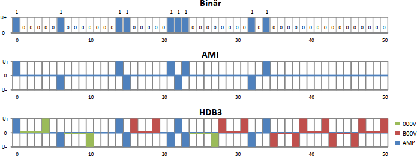
Nutzung der Bandbreite
Übertragunsrate hängt von folgendem ab:
- Bandbreite der Übertragunsstrecke
- Stärke des Signals vgl. mit Störungen
Symbolrate (Nyquist Rate)
Der Empfänger kann anhand des Zustands des Übertragungsmediums die übertragene Information
ermitteln (Dekodierung). Dieser Zustand = Symbol
Anzahl von Zustandsänderung pro Zeit = Symbolrate (in Baud)
!= Bitrate !!!
Maximale Symbolrate abhängig der Nutzbaren Bandbreite in Hertz.
ADSL/ISDN wichtig?
Maximal erreichbare Bitrate (Hartley's Gesetz)
Die maximal erreichbare Bitrate ist das Produkt der Symbolrate und dem Informationsgehalt der Symbole.
Anzahl erkennbare Zustände
Grösse des Signals (Amplitude)
Ungenauigkeit des Empfängers bzw. Störungen
Informationsgehalt eines Symbols
Maximal erreichbare Bitrate
Z.B. AMI-Code
Dreiwertig ()
Pro Schritt wird aber nur 1 Bit übertragen, d.h. Effizienz von
Gesetz von Shannon-Hartley
| Kanalkapazität
| Bandbreite
| Signalleistung
| Rauschleistung
Faktor 2 fehlt, da ein Verhältnis von Leistungen ist, die quadratisch mit den Spannungen zusammenhängen.
Data Link Layer
Bei Punkt-Punkt-Verbindungen:
- Massnahmen zur Fehlererkennung und -korrektur
- Ver- und Auspacken der Frames (Framing)
- Frame-Erkennung
- Flow-Control
Bei mehreren Teilnehmern:
- Adressierung der Teilnehmer
- Medium Zugriff
Asynchrone Übertragung
Übertragung nur bei Bedarf. Startbits markieren den beginn eines Frames. Pause zwischen Frames.
Frames bestehen normalerweise aus Header, Daten, und Prüfbits:
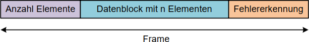
Synchrone Übertragung
Laufend Frames senden ohne Unterbruch. Leer-Frames, wenn keine zu sendenden Daten vorhanden.
Es müssen im Gegensatz zur asynchronen Übertragung auch die Byte-Grenzen erkannt werden.
Start- und End-Flags für Anfang und Ende eines Frames. (Spezielles Bitmuster)
Bitstopfen, damit das Bitmuster nicht in der Mitte des Frames auftritt.
Nach 5 aufeinanderfolgenden Einsen eine Null.
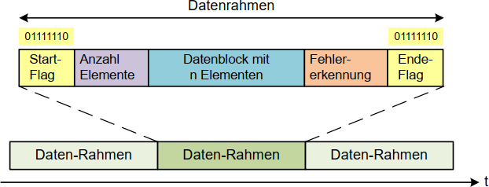
Frame-Länge
Je länger die Frames, desto besser die Nettobitrate.
aber:
- Wahrscheinlichkeit eines Übertragungsfehlers ist grösser
- Datenverlust grösser, wenn Fehler auftritt
- Wahrscheinlichkeit, dass ein Fehler nicht entdeckt wird ist grösser
- Jitter: Variation der Zeitabstände zwischen Frames höher
Jitter
Lange Frames blockieren die Übertragungsstrecke für längere Zeit. Problem z.B. bie Multimedia Applikationen.
Unregelmässige Updates.
Durchsatz
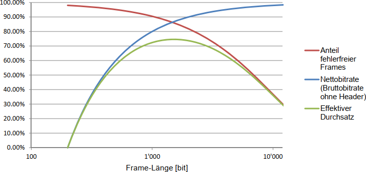
Optimaler Durchsatz bei BER und Header-Länge bei Frame-Länge
Optimale Frame-Länge wobei Header-Länge
Fehlererkennung und -korrektur
- Backward Error Correction: Empfänger erkennt Fehler, fordert Retransmission. BER klein
- Forward Error Correction: Empfänger erkennt und korrigiert Fehler. BER grösser
Erkennung
Prüfbitgenerator CRC stuff
Erkennbare Fehler mit einer Hamming-Distanz :
Other Error stuff TODO
Flow control
- Sender produziert mehr Daten als Empfänger verarbeiten kann => Problem
- Empfänger sendet Stopp-Meldung
- Wenn die untere Limite wieder erreicht wurde, sendet der Empfänger eine Start-Meldung
Es gibt auch die Methode jeweils eine "Quittung" zurückzuschicken (wie bei TCP)
Wichtig ist, dass der Data Link Layer alleine das Problem nicht lösen kann, da die Daten nochmals gesendet und somit generiert werden müssen.
Medium Zugriff
Mehrere Verfahren für Media Access Control.
Master/Slave-Verfahren
- Master fragt zyklisch jeden Slave an.
- Slave antwortet an Master.
- Master speichert Daten ab
- Master sendet an Slave.
Vorteile:
- sehr einfach Slaves an-/abzuhängen
- Zeit zwischen Slave-Zugriffen voraussehbar (deterministisch)
Nachteil ist, dass die Transferzeit hoch ist, da immer über den master gesendet werden muss.
Token Passing
Ein Token wird zwischen gleichberechtigten Knoten in festgelegter Reihenfolge weitergereicht.
Man darf nur senden, wenn man den Token hat.
Vorteil: deterministisch und besser wie Slave, weil die Knoten direkt miteinander kommunizieren können.
Nachteile:
- Relativ aufwändig Knoten hinzuzufügen oder abzubauen.
- Was wenn Token verloren geht?
Anwendung: Token-Ring
Kann auch Frame Passing verwenden:
- Master schickt ein "leeres" Frame. Für die Slaves ist jeweils Platz im Frame reserviert.
- Slave erhält das Frame, füllt Daten ein
- Sendet das Frame weiter (an nächsten Knoten)
Zeitgesteurter Zugriff
Analog Taktfahrplan im Bahnnetz. Vorteil: sehr fair. Nachteil: ist Planung. Fahrplan muss in jedem Knoten vorhanden sein.
Carrier Sense Multiple Access (CSMA)
Alle Knoten gleichberechtigt
- Knoten schaut ob Bus frei.
- Wenn frei, dann senden
- Sonst, warten, bis frei ist
Vorteil: kein Master, keine Konfiguration/planung
Nachteil: nicht deterministisch, und Was wenn gleichzeitig senden? Was wenn einzelner Knoten immer sendet?
Carrier Sense Multiple Access / Collision Detection (CSMA/CD)
- Knoten erkennen Kollisionen
- Warten zufällige Zeit
- Senden erneut
Carrier Sense Multiple Access with Collision Resolution (CSMA/CR)
ein Signalpegel wird als dominant definiert und gewinnt im Konfliktfall.
Der Verliere stellt die Kollision fest und bricht seine Übertragung ab.
Keine Übertragungskapazität geht verloren, aber es muss innerhalb einer Bitzeit erfolgen.
Layer-2-Protokolle
Folgende Layer-2-Protokolle werden eingesetzt:
- High Level Data Link Control (HDLC)
Von ISO und ITU genormtes Protokoll, das in vielen Anwendungen anzutreffen ist. - Point to Point Protocol (PPP = HDLC-Variante)
Protokoll zur Anbindung von abgesetzten Teilnehmern an einen Internet Provider.
Lokale Netzwerke (LAN)
Ein LAN ist ein räumlich begrenztes Netzwerk.
Topologie
Es gibt verschiedene Topologien. Heutzutage werden jedoch meist Baumtopologien eingesetzt.
Bustopologie
Knoten sind passiv am Medium angeschlossen und werden nur im Sendefall aktiv.
Linientopologie
Benachbarte Knoten sind mit Medium verbunden. In der Automation z.B. sehr beliebt.
Problem wenn einzelner Knoten ausfällt: A - B - C => A - B - C, a kann nicht mehr C erreichen und umgekehrt.
Ringtopologie
Wie Linientopologie - einfach Enden zusammenhängen
Doppel-Ringtopologie auch gut, als Fallback zum einfachen Ring, falls was ausfällt.
Sterntopologie
Knoten sind direkt an einen Verteiler (Hub/Switch) angeschlossen.
Knoten können einzeln ausfallen, aber Verteiler darf nicht.
Baumtopologie
Wie Sterntopologie aber Verteiler mit anderen Verteilern verbinden.
Übertragungsarten
3 Gruppen
- Unicast-Übertragung
Transfer von Quelle zu genau einem Ziel im Netzwerk. - Broadcast-Übertragung
Transfer von Quelle zu allen Knoten eines Netzwerks. (Netzwerk wird belastet, auch wenn Pakete für einige Knoten nicht wichtig sind) - Multicast-Übertragung
Transfer an eine bestimmte Gruppe von Knoten im Netzwerk. Sender versieht Paket mit Multicast-Adresse. Protokoll nötig, um sich in eine Gruppe ein/austragen zu können.
Normung LAN und MAN
IEEE entwickelt und normiert LANs und MANs.
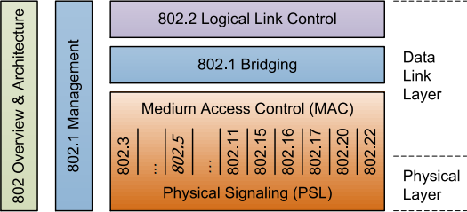
| ANSI/IEEE | Beschreibung |
|---|---|
| 802.3 | Ethernet |
| 802.11 | Wireless LANs (WiFi) |
| 802.15 | Wireless PANs (Bluetooth, ZigBee etc.) |
| 802.16 | Broadband Wireless MANs (WiMAX) |
| 802.17 | Resilient Packet Rings (MAN) |
| 802.20 | Mobile Broadband Wireless Access |
| 802.22 | Wireless Regional Area Networks |
Ethernet von 10 Mbit/s - 100 Gbit/s
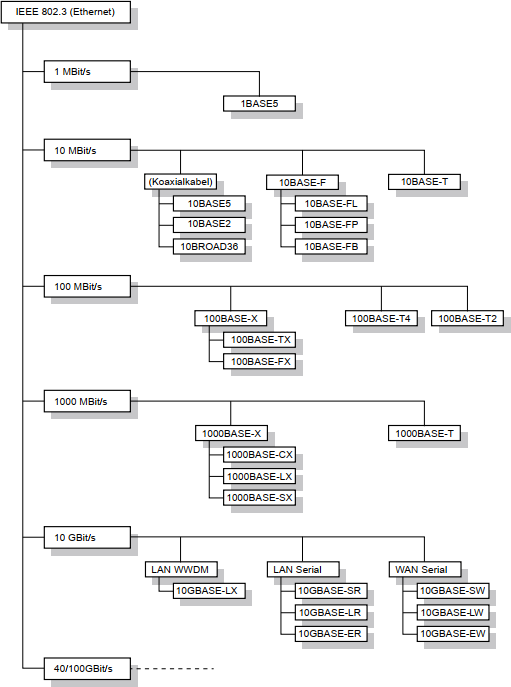
Shared Ethernet
Im Standard erstmals mit 10 MBit/s.
Physical Layer 10BASE5 und 10BASE2
Bis 500m, Koaxialkabel wird angebohrt und Transceiver befestigt.
Von Transceiver Kabel zum Knoten.
Danach 10BASE2, welches mit BNC-T-Stücken arbeitet und billiger ist.
Die BNC-Stecker sind aber empfindlich und haben sich nicht bewährt.
Leitungscodierung und Manchester-Code
keine Trägerfrequenz, 1 Symbol alle 100ns
Beim Manchestercode werden die Flanken und nicht die Zustände gelesen.
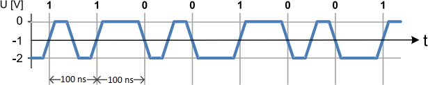
=> einfache Taktrückgewinnung, benötigt aber höhere Frequenz (10 Mbit/s <> 10 MHz, Doppelte vom theoretischen Minimum)
Asymmetrisches Signalpegel von und . Mit symmetrischen Pegeln ist er gleichstromfrei (10BASE-T)
Preamble und SFD
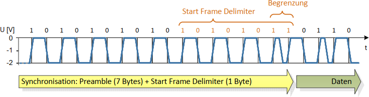
Senden (ohne Kollision)
- Warten bis Übertragungskanal frei
- Frame an Physical Layer übergeben
- Preamble und SFD senden
- Daten senden
- Kontrolle des Signalpegel auf Kollisionen (Überlagerung Sendesignale) und Mitteilung an Data Link Layer
- Meldung an übergeordnete Schichten
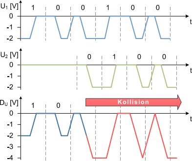
Empfang (ohne Kollision)
- Nicht sendende Knoten melden Data Link Layer, nicht zu senden.
- Alle Knoten werden zu Empfänger und übersetzen Manchester-Code
- Falls Zieladresse der eigene Knoten => Datenteil an Data Link Layer übergeben
Empfang (mit Kollision)
Nur zu Beginn der Übertragung.
- Kollision meldet Physical Layer mittels "collision detect signal"
- Jam-Signal (32-Bit, random Inhalt) senden
- Datalink Layer kann durch Prüfsumme falsches Frame unterscheiden
- Sender wartet variable Zeit.
Zeit zu warten ist ein Vielfaches der Slot-Zeit , die 512 Bitzeiten entspricht:
10 Mbit/s Ethernet , 100 Mbit/s
- Kollision oder bei nachfolgenden immer das doppelte der vorherigen.
Aufbau Ethernet-Frames
LSB vor MSB
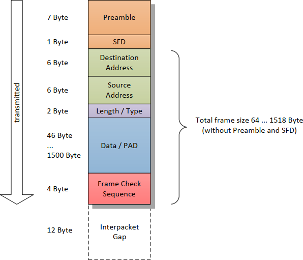
Destination Address
MAC-Adresse mit 6 Bytes, weltweit eindeutig
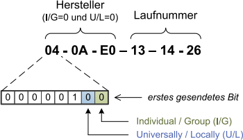
3 Bytes: Organizationally Unique Identifier (OUI), Herstellerspezifisch
3 Bytes: Vom Hersteller bestimmt, muss eindeutig sein
Ausnahmen sind Multicast- und Broadcast-Adressen
Source Address
MAC-Adresse des Senders. Das erste Bit muss 0 sein (Individuelle Adresse)
Length / Type
- Wert gibt die Anzahl von Bytes im Datenfeld "Data" an (ohne Fülldaten)
- Wert welches höheres Protokoll im Datenfeld ist.
Data / Pad
Datenfeld mit Padding auf 64 Bytes wenn kleiner als 46.
=> minimale Frame-Länge 64 Bytes
Frame Check Sequence (FCS)
CRC32 Check Sequence
Interframe Gap (IFG)
minimaler zeitlicher Abstand zwischen Frames. Gehört zum Physical Layer.
Repeater und Hubs
Länge der Bus-Segmente durch Dämpfung limitiert.
Signalverstärker = Repeater restauriert Amplitude sowie Preamble, Flanken und Jitter.
Hub = Multiport-Repeater
- Hub sendet Jam-Signal auf allen Segmenten, wenn Kollision entdeckt.
- Hub unterdrückt Signal falls länger als 5ms gesendet wird.
Round Trip Delay
Ein beliebiger sendender Knoten muss eine Kollision erkennen können, solange er noch am Senden ist.
Interframe Gap Shrinkage
Durch Repeater werden die Preamble länger und der IFG kürzer.
Collision Domain
Bereich des Netzwerks in dem eine Kollision erkannt werden kann heisst Collision Domain
Die Collision Domain darf nur halb so gross sein, wie die Ausdehnung des kürzesten Frames.
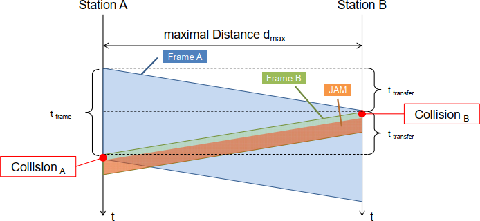
Die Bedingung für die Erkennung einer Kollision durch Knoten A ist:
Maximale Ausdehenung eines Segments:
Wenn Repeater/Hubs verwendet werden, erhöht sich die Übertragungszeit entsprechend.
Übungen
- Nenne einen typischen Vorteil der folgenden Topologien und ob sie heute noch allgemein eingesetzt wird.
- Bus-Struktur
? keine Verteiler benötigt ?
wird nicht mehr eingesetzt - Baum-Struktur
Kleine Kollisionsdomäne mit Switches, hierarchisch aufbaubar
wird allgemein eingesetzt - Ring-Struktur
einfach erreichte Ausfallsicherheit, da Knoten mindestens 2 Mal angeschlossen werden
wird nicht mehr eingesetzt
- Bus-Struktur
- Man nenne je zwei typische Nach- oder Vorteile von CSMA/CD
- Vorteile
Kollisionserkennung
Kein Master für die Übertragung nötig - Nachteile
nicht deterministisch
?
- Vorteile
- siehe oben
- Abbildung 5.27 zeigt ein Ethernet-Signal (0.5µs/Division). Eingezeichnet sind die letzten 4 Bits des Start-Frame-Delimiters.
- Zeichnung
- doppelte spannung
- Manchester-Code, Vorteile:
- Kollisionen einfach erkennbar
- Kann gleichstromfrei sein
- Taktrückgewinnung auf einfache Weise
- Das zuerst gesendete Bit (I/G) einer Ethernet "Destination Address" hat die Bedeutung "Individual Address/Group Address".
- Wie wird eine "Group Address" (oder das zugehörige Verfahren) üblicherweise genannt?
- Multicast-Adresse
- Warum hat das Bit I/G in der "Source Address" keine Bedeutung?
- Der Typ des Absenders des Pakets ist irrelevant
- Man gebe in hexadezimalerDarstellung eine typische "Group Address" an.
- FF-FF-FF-FF-FF-FF
- Was für ein Bit der Ethernet-Adresse hat sonst noch eine spezielle Funktion? Welche?
- Das Bit nach dem LSB. Es bezeichnet ob die Adresse universal oder nur lokal administriert ist. (werden durch Software gesetzt)
- Wie wird eine "Group Address" (oder das zugehörige Verfahren) üblicherweise genannt?
- Mit Hilfe des LAN/Ethernet-Analyzers stellt man fest, dass ein Gerät dauernd fehlerhafte Frames sendet. Man weiss jedoch nicht, welches Gerat dies sein könnte.
- Woran lasst sich erkennen, dass ein 802.3-Frame fehlerhaft ist (2 Antworten)?
- Fehlererkennung, CRC-32 Checksumme
- Zu lang / zu kurz
- Anhand von welcher (MAC-)Information lässt sich die Suche einschränken?
- Die ersten 3 Bytes geben den Hersteller an.
- Wie könnte man konkret vorgehen, um den Übeltäter (in einem grossen Netz) zu finden?
- ARP-Request an Absender-Adresse?
- Woran lasst sich erkennen, dass ein 802.3-Frame fehlerhaft ist (2 Antworten)?
Switched LAN und Ethernet-Technologien
Bridges und Switches (ent)koppeln Collision Domains.
Promiscuous Mode
Alle Pakete an Ports entgegennehmen. (Bridges)
Filtering Database
Bridge speichert Absenderadresse eines korrekten Frames, um später nicht mehr an allen Ports zu senden.
Broadcast Domain (Layer 2)
Repeater, Hub, BRidge, Switch sowie gleiches VLAN